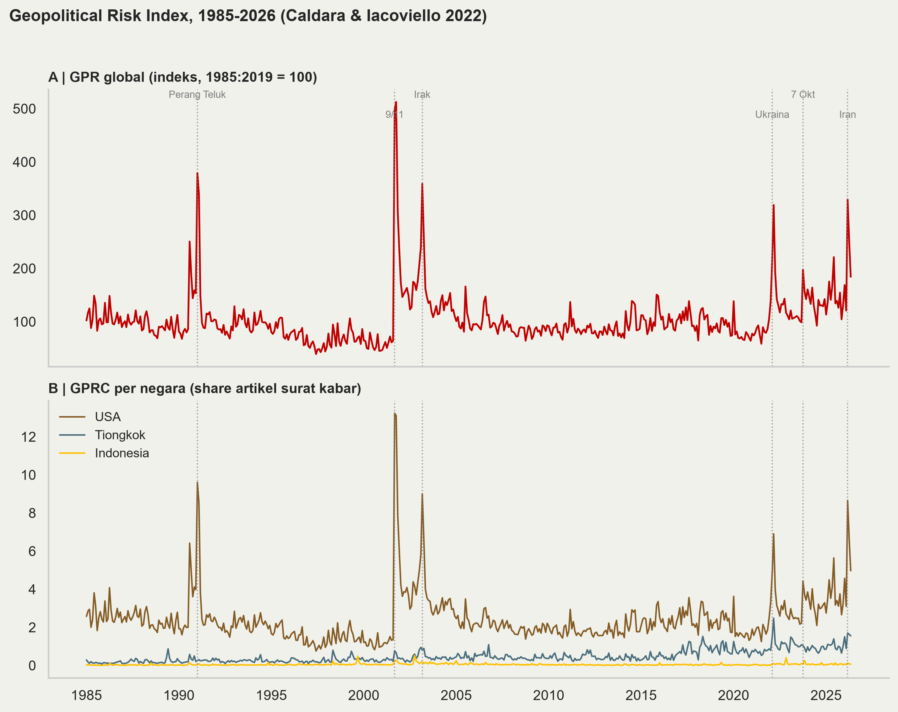
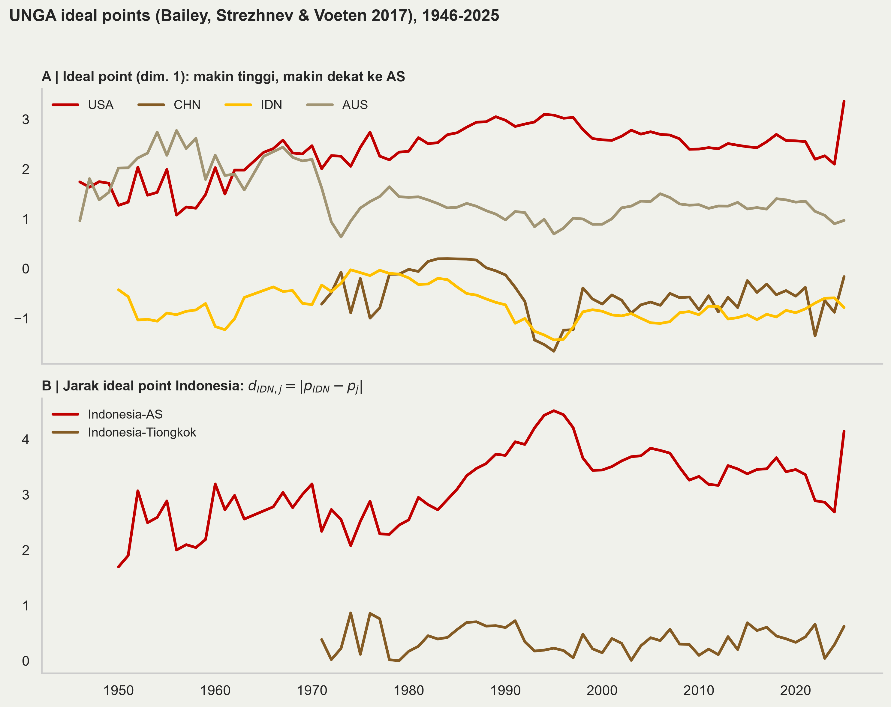
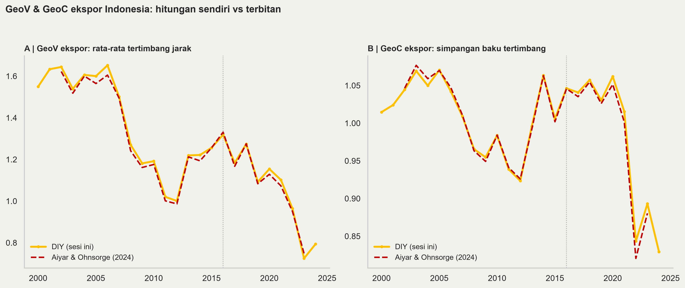
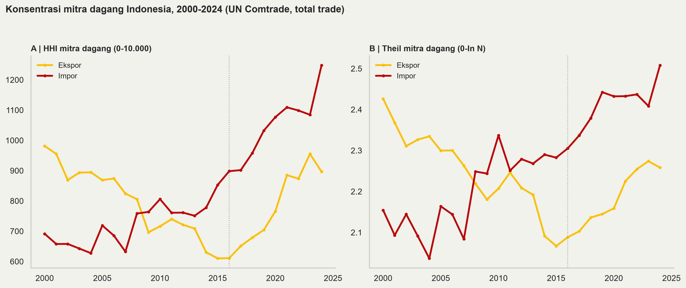

2026-07-21
Kita coba menghitungnya sendiri, dari data publik, dengan Python.
Empat latihan:
Prinsip: semua reproducible: data publik, kode terbuka, angka di slide ini semuanya keluaran skrip.
Struktur folder (bisa di-clone dari GitHub):
geoeconomics/
index.qmd # slide ini
README.md # instruksi + tabel sumber data
code/ # 01_gpr.py ... 04_hhi_theil.py
data/ # semua input (~9 MB, sudah disertakan)
figures/ # output PNGKebutuhan: Python (Anaconda) + pandas numpy matplotlib xlrd, gaya figur fig-den, dan Quarto.
| Data | Sumber |
|---|---|
| GPR | matteoiacoviello.com/gpr.htm |
| Ideal points | Harvard Dataverse doi:10.7910/DVN/LEJUQZ |
| Trade bilateral IDN | UN Comtrade (comtradeapicall) |
| GeoV/GeoC (validasi) | Harvard Dataverse doi:10.7910/DVN/PGCQVD |
Caldara & Iacoviello (2022): risiko geopolitik diukur dari frekuensi pemberitaan:
GPR = indeks global (rata-rata 1985–2019 = 100); GPRH = versi historis sejak 1900.
\(GPRC_i\) = indeks spesifik negara \(i \in \{\text{ 44 negara}\}\): share artikel yang menyebut negara itu dalam konteks risiko geopolitik.
Satu file Excel, bulanan, gratis, sudah di download di “data/gpr_raw.xls”.
01_gpr.py)raw = pd.read_excel("data/gpr_raw.xls", sheet_name="Sheet1") # ambil data
raw["year"] = raw["month"].dt.year # bikin jadi ts
annual = raw.groupby("year")[["GPR", "GPRC_USA",
"GPRC_CHN", "GPRC_IDN"]].mean()
axA.plot(annual.index, annual["GPR"]) # panel A: global
for col in ["GPRC_USA", "GPRC_CHN", "GPRC_IDN"]: # panel B: per negara
axB.plot(annual.index, annual[col])
Bailey, Strezhnev & Voeten (2017): posisi politik negara diestimasi dari pola voting Majelis Umum PBB 1946–kini → satu angka per negara-tahun, ideal point (dim. 1: makin tinggi = makin dekat tatanan liberal pimpinan AS).
Cara menarik datanya:
Idealpointestimates1946-2025.tab;pd.read_csv(..., sep="\t") — kolom kunci: iso3c, year, IdealPointFP.
Ingat definisi (Aiyar & Ohnsorge 2024):
\[GeoV_i = \sum_j w_{ij} d_{ij}, \qquad GeoC_i = \sqrt{\tfrac{N}{N-1}\sum_j w_{ij}(d_{ij}-GeoV_i)^2}\]
dengan \(w_{ij}\) pangsa mitra \(j\) dalam ekspor negara \(i\) dan \(d_{ij}\) jarak ideal-point. Resepnya:
03_geo_vc.py)for year, g in exp.groupby("refYear"):
p = ip[ip["year"] == year].set_index("iso3c")["IdealPointFP"]
g = g[g["iso3"].isin(p.index)] # mitra ber-ideal-point
w = g["primaryValue"] / g["primaryValue"].sum() # 1. bobot
d = (p["IDN"] - p.loc[g["iso3"]]).abs() # 2. jarak
geov = (w * d).sum() # 3. GeoV
n = len(g) # 4. GeoC
geoc = np.sqrt(n/(n-1) * (w * (d - geov)**2).sum())Mitra tanpa ideal point (mis. kawasan “areas nes”) dibuang lalu bobot dinormalisasi ulang — cakupan 93–96% nilai ekspor (173–188 mitra).

Garis emas = hitungan kita; merah putus-putus = database terbitan Aiyar & Ohnsorge.
| Tahun | GeoV DIY | GeoV terbitan | GeoC DIY | GeoC terbitan |
|---|---|---|---|---|
| 2002 | 1,64 | 1,62 | 1,04 | 1,05 |
| 2016 | 1,32 | 1,33 | 1,05 | 1,05 |
| 2023 | 0,72 | 0,75 | 0,89 | 0,88 |
Selisihnya kecil — sumber selisih: vintage ideal points, sumber bobot, cakupan mitra. Metodologi yang terdokumentasi baik bisa direplikasi.
Substansi (Sesi IV): GeoV dan GeoC ekspor turun = konsentrasi ke mitra selaras, bukan diversifikasi.
DIY punya bonus: bisa diperluas ke 2024 (terbitan berhenti di 2023), ke impor, atau ke level sektor.
\[HHI_t = \sum_j s_{jt}^2 \times 10.000, \qquad T_t = \sum_j s_{jt}\,\ln(N_t\, s_{jt})\]
di mana \(s_{jt}\) adalah pangsa mitra \(j\) dalam ekspor (atau impor) tahun \(t\) dan \(N_t\) jumlah mitra bernilai positif.
HHI: 10.000 = satu mitra; merata di \(N\) mitra = \(10.000/N\) → kebalikannya, \(10.000/HHI\) = “jumlah mitra efektif”. Skala ×10.000 = konvensi persen-kuadrat (DOJ/FTC).
Theil: 0 = merata sempurna, \(\ln N_t\) = satu mitra. Kelebihannya: dapat didekomposisi — total = konsentrasi antar-kelompok + dalam-kelompok (mis. antar blok geopolitik vs di dalam blok) — HHI tidak bisa.
04_hhi_theil.py)Fungsi lima baris — sama persis untuk ekspor, impor, level produk, level jasa, atau level eksportir individual.

HHI impor 898 → 1.248 (2016→2024): mitra efektif menyusut 11 → 8. Ekspor 611 → 897 (16 → 11 mitra efektif). Theil bergerak searah — dua ukuran, satu cerita: konsentrasi naik sejak 2016, terutama impor.
Top-5 mitra 2024 — impor: CHN 31,4%, SGP 9,2%, JPN 6,4%, USA 5,1%, MYS 4,6%; ekspor: CHN 23,6%, USA 10,0%, JPN 7,8%, IND 7,7%, MYS 4,7%.
Level di sini (partner-level, total trade) lebih rendah daripada dashboard DEN Sesi IV (HS-6): makin halus disagregasinya, makin tinggi konsentrasi yang terlihat — pilih level sesuai pertanyaan.
Angka 2024 di sini (impor 1.248) konsisten dengan dashboard (1.250 di 2024, 1.534 di 2025) — data 2025 belum ada di ekstrak Comtrade ini.
GPR relies on top 10 berita berpengaruh, yang sangat berpotensi western-centric. Bisa kita recreate dengan artikel yang kita pilih asal ada databasenya.
Ideal point relies on UN vote, jadi isu-isu yang ga ada di UNGA ga tercover. Plus, vote belum tentu menggambarkan actual ideal point.
Data ekspor-impor bisa kita ganti pakai data perusahaan alih-alih negara.
kode & slide: github saya